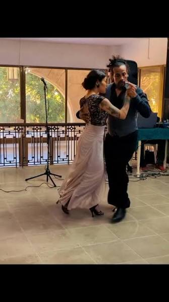
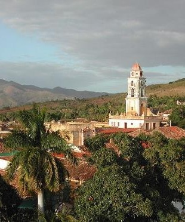
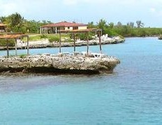
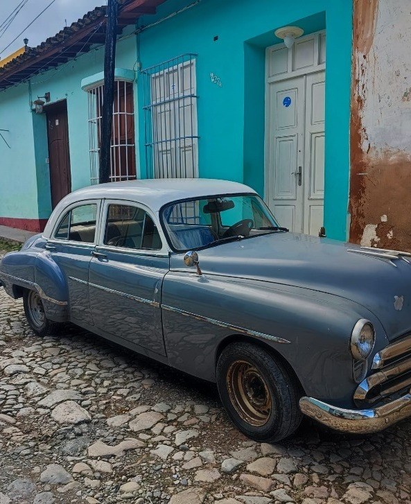
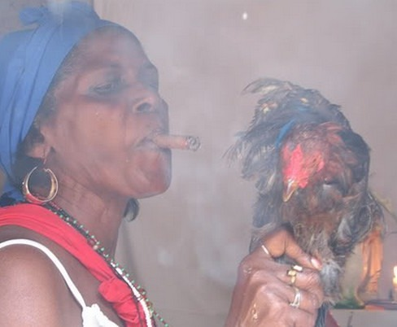

16 jours au cœur des Caraïbes
Fin octobre 2027, vibrez au rythme du tango lors du 8ème Festival de Tango de La Havane – un événement unique mêlant passion et culture cubaine – puis prolongez l'aventure à la découverte des trésors de l'île : la Vieille Havane, la Baie des Cochons, Trinidad et la Vallée des Ingenios.
Le voyage en un coup d'œil
🏛️ La Havane
- Vieille Havane (UNESCO)
- Le Vedado & la 23ème avenue
- Capitole & Palais des Capitaines
- Classic cars & Malecón

🎭 Festival TangueArte
- 8ème Festival de Tango (Oct. 2027)
- El Ojo del Ciclón
- Cours, milongas & spectacles
- Tango-thérapie & Rueda

🏛️ Trinidad UNESCO
- Ville coloniale préservée
- Palacio Cantero
- Vallée des Ingenios
- Casa de la Trova

🌊 Baie des Cochons
- Ciénaga de Zapata
- Playa Larga & Santa María
- Piscine naturelle Caleta Buena
- Mangroves préservées

🚗 Voitures 1950
- Transferts en classic cars
- Charmement rétro de l'île
- Ambiance vintage unique
- Traversée de l'île en style

🥁 Santería & Culture
- Cérémonie syncrétique
- Hemingway (Bodeguita & Finca Vigía)
- Cours de salsa & rumba
- Callejón de Hamel
TangueArte · Festival de Tango
Spectacles de tango-théâtre, tango-fusion, milongas en plein air et concours « Isla Tango ». Trois jours dédiés à la passion argentine revisitée à la cubaine.
Votre itinéraire jour par jour
1ère semaine : La Havane & Festival
Arrivée & Formalités
Accueil à l'aéroport, transfert en classic car vers la Vieille Havane. Installation en casa particular. Première immersion dans les ruelles pavées et les places animées.
Le Vedado & Vieille Havane
Découverte du quartier du Vedado : Musée Napoléonien, Arts Décoratifs. Puis le Capitole, le Parc Central, le Palais des Capitaines Généraux et la Place d'Armes.
Cours de salsa & Plages de l'Est
2h de cours de salsa cubaine. Après-midi détente sur les plages de Tarará et Santa María. Soirée libre.
Visite panoramique & El Bodegón
Place de la Révolution, Bois de La Havane, 5ème avenue. Dîner au restaurant El Bodegón.
Festival TangueArte
3 jours au cœur du festival : cours de tango (2h/j), milongas, inauguration et spectacle artistique au lieu emblématique « El Ojo del Ciclón ». Ambiance fusion tango-cubaine.
2ème semaine : Nature, Trinidad & Santería
Ciénaga de Zapata & Baie des Cochons
Route vers la Ciénaga. Piscine naturelle de Caleta Buena. Cienfuegos et Punta Gorda. Playa Larga et histoire de la Baie des Cochons.
Trinidad & Vallée des Ingenios
Découverte de Trinidad (UNESCO) : Palacio Cantero, Casa de la Trova. Vallée de los Ingenios et Torre Iznaga. Déjeuner guajiro à Manaca Iznaga, balade à cheval.
Retour à La Havane & Callejón de Hamel
Retour vers la capitale. La Havane bucolique. Nouveau cours de salsa. Visite du célèbre Callejón de Hamel, haut lieu de la culture afro-cubaine.
Cérémonie santera & Foire artisanale
Immersion dans une véritable cérémonie de Santería à Centro Habana. Syncrétisme religieux afro-cubain. Foire artisanale de San José pour les derniers achats. Soirée d'adieu sur le Malecón.
Vol retour
Transfert aéroport et vol retour avec la salsa dans les jambes et le tango dans le cœur.
Classic cars & Malecón
Traverser Cuba en voiture américaine des années 50, le long du Malecón face à l'océan. Une expérience hors du temps.
Avant le départ & sur place
🛂 Formalités
- Passeport : Valable 6 mois après retour
- Carte de tourisme : Visa obligatoire
- D'Viajeros : Formulaire numérique avant arrivée
- Assurance santé : Obligatoire (attestation Visa)
💵 Monnaie & Budget
- Pesos cubains (CUP) : Change en banque/Cadeca
- Restaurant : 10-35 €
- Cocktail (mojito) : ~4 €
- Conseil : Ne jamais changer à l'aéroport
🔒 Sécurité
- Cuba est l'un des pays les plus sûrs d'Amérique latine
- Éviter de marcher seul le soir dans les rues peu éclairées
- Décliner poliment les « jineteros »
- Ne pas acheter de cigares dans la rue (max 50 autorisés)
ℹ️ Infos pratiques
- Langue : Espagnol
- Décalage : -6h (12h Paris = 6h Havane)
- Prises : Américaines 110V/220V
- Eau : Potable et propre à la consommation
Votre itinéraire sur la carte
¡Azúcar! Bon séjour à Cuba !
Festival de Tango · La Havane · Trinidad · 16 jours au cœur des Caraïbes
Parlons de votre projet →